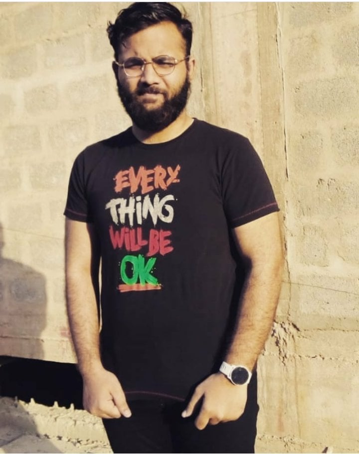
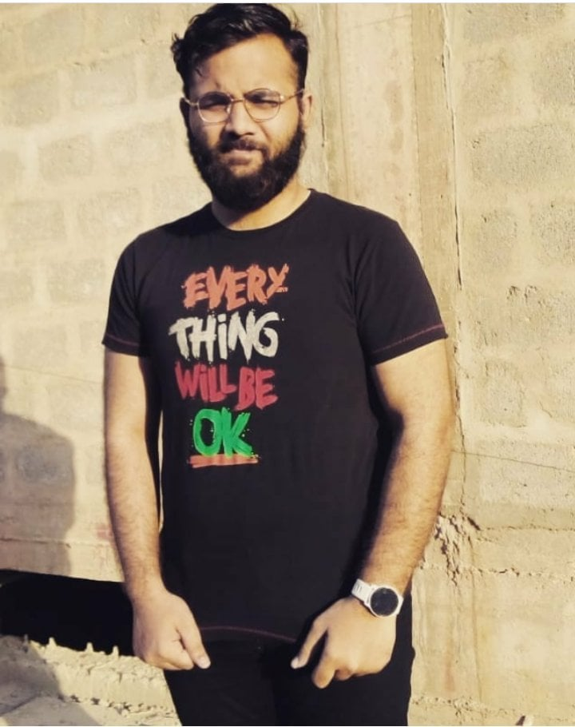

Silver for low-end players. Less than one-third of the player base is ranked at Silver. If you are one of them, be aware that just improving your aim will greatly influence your matches, rank, and game satisfaction. Gold Nova III is the average rank. It goes from the 50.33 to the 59.06 percentile. High-end Gold players deserve more respect as Gold Nova Master almost reaches the 70 percentile.
 
